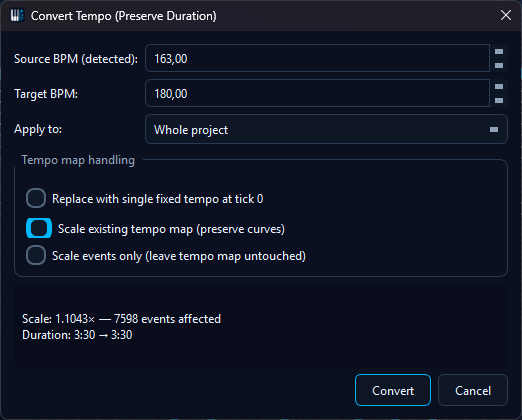

Convert Tempo, Preserve Duration
Convert Tempo, Preserve Duration
The Convert Tempo, Preserve Duration tool re-targets a MIDI file (or a part of it) from one musical tempo to another without changing how long it takes to play back in real time. A 90 BPM vocal recording dropped into a 180 BPM project will line up bar-for-bar with the project grid and sound exactly the same speed it always did.
💡 Find it in: Tools → Tempo Tools → Convert Tempo, Preserve Duration…, or right-click a track / channel / selection and pick the same entry from the context menu.
{kind=link}

The dialog with live preview, scope chips and tempo-mode picker.
Why this exists
Two existing operations almost solve the problem but neither is enough on its own:
- Change BPM - flips the tempo meta but leaves note ticks alone, so the music plays back at a different speed and a different musical length.
- Scale notes - multiplies tick positions but leaves the tempo alone, so the music takes longer / shorter in real time and re-aligns to different bars.
Combining the two by hand is fiddly and easy to get wrong. Convert Tempo, Preserve Duration does both in one atomic, undoable operation and shows the projected duration delta before you commit.
The math - one formula, one example
Worked example, 90 BPM → 180 BPM (scale = 2.0):
| Quantity | Before | After |
|---|---|---|
| Note start tick | 480 | 960 |
| Note length (ticks) | 240 | 480 |
| Tempo meta | 90 BPM | 180 BPM |
| Real-time start | 0.333 s | 0.333 s |
| Real-time length | 0.167 s | 0.167 s |
Real playback duration is preserved; the file now lives in the host project's 180 BPM grid. Round-trip 90 → 180 → 90 may introduce ≤ 1 tick of drift per event from rounding; the dialog shows a toast when this happens, and the optional Snap to grid checkbox cleans it up.
The dialog - field by field
| Field | What it does |
|---|---|
| Source BPM | Auto-detected from the tempo at tick 0; the label shows (detected). Override it manually for files whose first tempo event lies elsewhere. |
| Target BPM | Where you want to end up. Defaults to the current project tempo. |
| Scope | Whole project, Selected tracks, Selected channels or Selected events. A chip strip below the combo lists the affected tracks / channels and lets you add or remove entries on the fly - the right-click entry points pre-fill this strip from your panel selection. |
| Tempo handling |
Replace tempo map with target tempo (default), Scale existing tempo map, or
Keep tempo map, scale events only. The default does what most people mean by
"convert tempo": rewrite the tempo meta to the target BPM and scale every event tick
by target/source so the real-time playback length stays identical. See the
modes section for the other two.
|
| Include checkboxes | Notes, controllers, pitch bend, program changes, aftertouch, lyrics & text events, markers and time signatures - all on by default except time signatures, which are intentionally off (scaling them moves the bar lines relative to the notes and is rarely what you want). |
| Quantize after conversion | Optional. Runs the existing quantizer with the project grid right after the conversion so the result lands cleanly on beats. |
| Live preview pane | Recomputes on every field change (100 ms debounce) without modifying the file. Shows the projected new duration with a Δ indicator, the scale factor, the affected event count and the number of source tempo events. |
Tempo handling modes
| Mode | Behaviour | Use when |
|---|---|---|
| Replace tempo map with target tempo (default - "just convert the BPM") |
All TempoChange events are removed and a single tempo at target_bpm
is inserted at tick 0. Event ticks scale by target/source so note lengths
grow / shrink to match. The piece sounds exactly the same speed as before but now
lives at the new BPM. |
The common case: re-target a clip from one tempo to another. 90 BPM vocal → 180 BPM project, etc. |
| Scale existing tempo map | Tempo events keep their tick-relative position and their BPM values are inverse-scaled so the real-time tempo curve is preserved at the new musical-tick rate. | Pieces with a written-in ritardando / accelerando that you want to retime without flattening the tempo changes. |
| Keep tempo map, scale events only | The tempo map is left exactly as it was. Only the selected event ticks are rescaled. | You want a half-time / double-time correction inside a project that already runs at the correct musical tempo. |
⚠ Channel-scoped conversions cannot use Replace mode. Rewriting the project tempo from a single channel's local conversion would silently retime every other channel, so the dialog disables Replace when scope is Selected channels and forces Events only (or, eventually, Scale tempo map).
Entry points
- Tools menu → Tempo Tools → Convert Tempo, Preserve Duration… - opens the dialog with scope set to Whole project.
- Tracks panel - right-click a track row, pick Convert Tempo, Preserve Duration…. Scope is pre-set to Selected tracks with the right-clicked track plus any other already-selected tracks pre-filled into the chip strip.
- Channels panel - same idea: right-click a channel, scope pre-set to Selected channels.
- Matrix / piano roll - with at least one event selected, the right-click menu adds the same entry with scope pre-set to Selected events. Mirrors the existing Quantize-selection idiom.
All four entry points open the same dialog and route through the same
onConvertTempoPreserveDuration(ScopeHint) slot. The dialog itself remains the source
of truth - you can change scope, chips, modes and include-flags before clicking OK.
Safety guarantees
- Single undo step. The whole conversion runs inside one
Protocol::startNewAction("Convert tempo (preserve duration): X→Y BPM")block - one Ctrl+Z restores every event tick and the tempo map exactly. - NoteOn / Off pairing is preserved. Each NoteOn and its matching OffEvent are scaled
together via
noteOn->offEvent()so the pair never desyncs. - Tick-domain math. Scaling happens at the absolute-tick layer; the existing MIDI writer converts to deltas on save, so we never have to touch delta-time encoding.
- Meta channels are opt-in. Channels 16 (lyrics/text), 17 (tempo) and 18 (time signature) are never scaled implicitly - you have to tick the matching include flag.
- Drum / FFXIV percussion safety. The CH9 program-change injection used by FFXIV SoundFont Mode reads NoteOn ticks live and doesn't cache, so it stays correct after a conversion.
Warnings the dialog raises
| Situation | What you'll see |
|---|---|
| Source ≡ Target BPM | OK button disabled. Footer: "Source and target tempo are identical - nothing to do." |
| Scope returns 0 events | OK disabled. "No events in scope." |
| > 1 tempo event in source + Replace mode | Yellow warning row: "Source contains N tempo changes - they will be collapsed to a single tempo at the target BPM." |
| Time signatures unchecked but selection contains them | Inline warning: bar lines will visually drift relative to the notes after conversion. |
| Round-trip drift | After-action toast: "N events scaled. Round-trip back to source BPM may differ by ≤ 1 tick per event." |